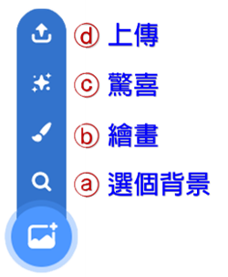
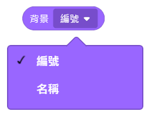

|
|
|---|
 背 景
背 景
「背景」是舞臺組成的一個部分，它就是一張圖像，可以是插圖或是照片。
「背景」對於舞臺的關係就如同是「造型」對於角色的關係。一個角色可以有多個造型，舞臺也是一樣，可以有許多個背景，當舞臺接收到更換背景的指令時，它就會以對應的背景顯現在舞臺上。當下只會顯示一個背景，不會多個背景同時顯現。
當你選取舞臺背景後，就可以通過點按舞臺的「背景」標籤，來查看它的所有背景清單或是更改背景的排列順序。在這裡也可以新增舞臺的背景，新增的方式除了可以從範例背景庫中選擇、從電腦中上傳外，也可以利用圖像編輯器來自己創建繪製新的背景，此外，也可以編輯修改或刪除現有的背景以及對背景進行命名。
「背景」是固定的，它無法移動、旋轉，也無法改變尺寸......，它能顯示的最大值為 480x360 像素，而且它永遠是位在舞臺的最底層（所有角色的後面）。你可以刪除它，但最終一定會留下一個，因為舞臺至少要有一個背景設置的。而雖然它無法進行實質性的外觀改變，也無法進行位置移動改變，但還是可以進行圖像效果的變化，如漩渦、像素化...等，以及進行音效的播放。
「背景」和角色的「造型」一樣，也有背景編號和背景名稱兩個重要的屬性，背景編號是按背景在清單中排列的順序自動産生的（可以用滑鼠拖動背景的方式來改變背景在清單中的順序位置，即可改變其編號），背景名稱則是可以自己命名的。最後新增的背景會自動排在清單的最後位置。
「背景」的工作方式與廣播訊息和角色相似。當更改或單擊背景時，它會發送〈當背景換成ｘｘ〉積木所觸發的事件。與廣播一樣，背景可以由任何角色來啟動。比較特別的是，「背景」有一個專屬積木〈當背景換成ｘｘ並等待〉，可以使它等待各角色切換背景腳本都執行完成後，再執行自己下方的腳本。
而由於「背景」是不可移動的，所以如果要設置重複移動的卷軸式背景，就必須將「背景」當成「角色」來使用，也就是將「背景」新增至「角色」區裡，然後放置到圖層的最下層來操作。
此外，在前面有提及「背景」能顯示的最大值為 480x360 像素，這並不是指背景只能是 480x360 像素的大小，有些專案會使用大地圖背景，然後透過座標的設定來呈現顯示的區域，而這種大地圖背景就一定得是向量圖格式才可以存在。